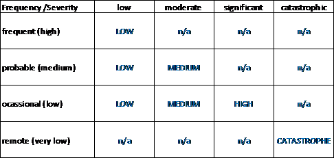
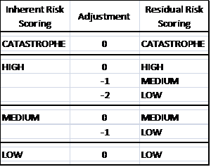

INHERENT AND
RESIDUAL SCORING
Argo evaluates risk
scenarios based on their inherent riskiness, as well as their residual riskiness
following the application of a number of mitigating actions and controls.
Inherent risk scoring
The
universe of risks are classified according to their frequency (i.e. likelihood)
and severity (i.e. impact). The scale for severity is low, moderate, significant
and catastrophic and the scale for frequency is remote, occasional, probable and
frequent.
The frequency of
occurrence is based on a scale from 1 to 4, as follows:
1.
Remote: given the very
predictable and stable environment for this risk, exposure to external factors
is negligible.
2.
Occasional: given the
predictable and stable environment for this risk, exposure to external factors
is limited.
3.
Probable: given the unpredictable
and unstable environment for this risk, exposure to external factor is prevalent
within the next 12 months.
4.
Frequent: given the highly
unpredictable and unstable environment for this risk, exposure is significant;
the risk is almost certain to occur if left uncontrolled.
The severity is based on
a scale from 1 to 4, as follows:
1.
Low: the event will not
cause a material impact to operations and/or financials and no negative effects
are expected. Any negative impact could be corrected without significant effort
or visibility.
2.
Moderate: the event will have
some impact on operations and/or financials and may cause some disruption for
non-critical areas of the company.
3.
Significant: the event will
have major impact on operations and/or financials, and is likely to cause
significant disruption in service (a very visible event).
4.
Catastrophic:
the event will be
of remote frequency, have a catastrophic severity, and will likely have a
significant impact on earnings and/or capital.
The
following matrix shows the combinations between frequency and severity and the
corresponding risk scores:

The risk
scoring is LOW, MEDIUM, HIGH and CATASTROPHE in ascending scale of importance.
The ‘n/a’ label stands for ‘not applicable’, either due to the application of
catastrophe risk definition or because the combination of frequency and severity
leads to a phantom risk (any event with high frequency and high severity should
be fully anticipated by an organization and incorporated in its planning). A
catastrophe risk is a risk with remote (very low) frequency and catastrophic
severity/impact which can have significant impact on earnings and/or capital.
The focus
of risk management are catastrophe, high and medium risks, and these risks
should be consistent with the risk profile of Argo per economic capital modeling
analysis, per rating agencies assessments, etc. Low risks, even identified, will
not be the focus of enterprise risk management.
Residual risk scoring
Under the
methodology: (1) residual risk scoring is not independent from inherent risk
scoring and (2) risk controls (i.e. mitigation) cannot increase risk scoring.
For each
inherent risk, it is necessary to determine the effectiveness of risk controls
and/or mitigation plans in place to arrive to the residual risk scoring:
1. If risk
controls/mitigation plans are not in place or they are ineffective, the residual
risk score will be the same as the inherent risk score.
2. If risk
controls/mitigation plan is in place and they are effective to reduce risk
moderately, the residual risk score will be the one level below the
inherent risk score.
3. If risk
controls/mitigation plan is in place and are effective to reduce risk
substantially, the residual risk score will be the two levels below the
inherent risk score. Very few risks should qualify for a 2 levels adjustment.
Important: Catastrophe
risk controls do not affect residual risk scoring as this risk remains high even
after risk controls/mitigation plans.
